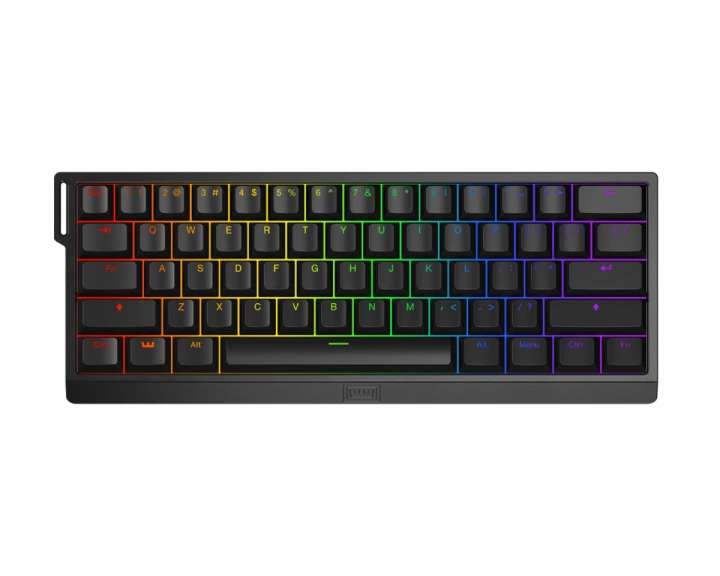

2299 kr
Wooting 60HE+ är ett analogt tangentbord i en 60% layout som använder halleffektsensorer för att registrera exakt hur långt en tangent trycks ner, vilket ger användarna oöverträffad kontroll över sina ingångar.
Gamingtangentbord från Wooting
Wooting 60HE+ är ett analogt tangentbord i en 60% layout som använder halleffektsensorer för att registrera
exakt hur långt en tangent trycks ner, vilket ger användarna oöverträffad kontroll över sina ingångar.
Då detta 60% tangentbord har hall-effect switchar (Linear60) går det att anpassa actuation point mellan 0,1 och 4.0 mm. Utöver anpassningsbara aktiveringspunkter, Rapid Trigger, och spilltålighet kan du spara upp till 4 profiler på tangentbordet. Ingår även en keycap puller. Köp ditt Wooting 60HE+ tangentbord och upplev vad ett premiumtangentbord kan göra.
Vårt artikelnummer: 31400
Tillv. artikelnummer: WK3-US2-L60-102
Wooting, ett holländskt företag grundat av tre passionerade spelare, har tagit den mekaniska tangentbordsvärlden med storm. Deras hemlighet? En kompromisslös strävan efter innovation och prestanda. Wooting är inte nöjda med att bara erbjuda snygga tangentbord – de vill revolutionera spelupplevelsen. Deras unika Lekker switches möjliggör analog input på mekaniska tangentbord, vilket ger en oöverträffad kontroll och precision.
Föreställ dig att styra din spelkaraktär med samma finess som med en handkontroll, men med den taktila responsen och hållbarheten hos ett mekaniskt tangentbord. Varje tangentbord är byggt med omsorg och högkvalitativa komponenter för att möta de mest krävande användarnas behov. Wootings framgång är inte en slump. Deras passion för innovation, fokus på kvalitet och starka gemenskap har gjort dem till en favorit bland gamers och entusiaster världen över. Wooting är ett bevis på att man kan nå framgång genom att kombinera passion, hårt arbete och en vilja att tänja på gränserna för vad som är möjligt.
| Anslutning | USB |
|---|---|
| Trådlös | Nej |
| Kompatibilitet | Linux, MAC, PC |
| Mekaniska brytare | Ja |
| Typ av brytare | Gateron x Lekker Linear60 |
| Formfaktor | Compact |
| Knapplayout | ANSI |
| Språklayout | ANSI |
| Belysning | Ja, RGB |
| Färg på belysning | RGB (16.8 m) |
| Knappmaterial | PBT Double-shot |
| Double-shot | Ja |
| N-key rollover | Ja |
| Anti-ghosting | Ja |
| Hotswap | Ja |
| Färg | Svart |
| Garanti | 4 års garanti |
| Bredd | 302 mm |
| Djup | 116 mm |
| Höjd | 38 mm |
| Vikt | 605 g |